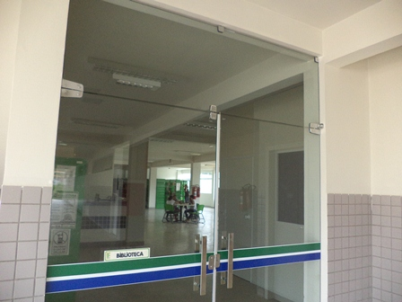

Página inicial
Notícias

O Campus
Situada no estado da Bahia, extremo norte da Chapada Diamantina, a cerca de 330 km de Salvador, a cidade de Jacobina tem mais de 80 mil habitantes. Rodeado por serras, lagoas, grutas, rios e cachoeiras, o município se destaca pelo potencial ambiental, com diversos atrativos voltados ao ecoturismo, bem como cultural, sendo palco de manifestações tradicionais e artísticas singulares. Com uma história diretamente ligada à atividade mineradora, Jacobina é também conhecida como a Cidade do Ouro.
É nesse lugar diferenciado que nasce o nosso campus. Fruto da segunda fase da expansão da Rede Federal de Educação Profissional, Científica e Tecnológica, o Campus Jacobina do IFBA foi inaugurado simbolicamente em Brasília, no ano de 2010, começando seu funcionamento em 2011.
Atualmente, oferece os cursos técnicos integrados e subsequentes ao ensino médio de informática, eletromecânica e mineração, além da formação de meio ambiente, disponível na forma subsequente. Ainda dispõe da licenciatura em computação, seu primeiro curso de nível superior. Nosso campus também já ofertou cursos profissionalizantes de curta duração, bem como semipresenciais de nível técnico, com destaque para as formações em guia de turismo e informática.
O IFBA
O Instituto Federal de Educação, Ciência e Tecnologia da Bahia (IFBA), criado pela Lei nº 11.892/2008, é resultado das mudanças promovidas no antigo Centro Federal de Educação Tecnológica da Bahia (Cefet-BA). Autarquia do Governo Federal, a instituição existe há mais de 100 anos, estabelecendo-se, em 1910, na capital baiana, como a primeira Escola de Aprendizes Artífices do país.
Ao longo de sua trajetória, recebeu distintas denominações, como Liceu Industrial de Salvador, em 1937; Escola Técnica de Salvador (ETS), em 1942; Escola Técnica Federal da Bahia (ETFBA), em 1965; Centro Federal de Educação Tecnológica da Bahia (Cefet/BA), resultado da fusão entre o Centro de Educação Tecnológica da Bahia (Centec) e a ETFBA, em 1993, até chegar ao atual IFBA, em 2008.
Com a última transformação, o Instituto passa a ter características bem peculiares: equipara-se às universidades federais, atuando com a verticalização do ensino, da educação básica e profissional à superior, além de apresentar estrutura pluricurricular e multicampi. Hoje o IFBA está em mais de 20 cidades da Bahia, dentre elas, Jacobina.
Conheça mais sobre a história dessa instituição centenária neste vídeo e no Portal IFBA.
Tecnologia da Informação
Gerência de Gestão da Tecnologia da Informação
Regulamentação: Aguardando Regimento Interno
Chefia: Helder Alves Oliveira (técnico em informática) - Portaria de Nomeação
Horário de Atendimento: seg a sex das 7h às 12h e das 14h às 17h.
- Thiago Gomes Pereira* I Philip Ramon de Araújo Santos I Fábio Costa Cândido - Técnicos em Tecnologia da Informação - Horário de Atendimento: seg a sex das 8h às 12h e das 13h às 17h
- Ivo Chaves de França* I Analista de Tecnologia da Informação
Ramais: 8707 I 8733 I 8703 * E-mails: helder.alves@ifba.edu.br I thiago.pereira@ifba.edu.br I fabio.costa@ifba.edu.br philip.santos@ifba.edu.br I ivochaves@ifba.edu.br I I cgti.jacobina@ifba.edu.br
| Servidor(a) | Regime de Trabalho | Cargo | Ramal | Atendimento | |
| Ivo Chaves de França | Parcial | Analista de TI | 8703 | cgti.jacobina@ifba.edu.br ou na Central de Chamados no SUAP | Presencial: segundas-feiras das 7h às 12h20 e das 13h20 às 16h; Teletrabalho: terças a sextas |
| Thiago Gomes Pereira | Parcial | Técnico em TI (Gerente) | 8733 (WhatsApp) | cgti.jacobina@ifba.edu.br ou na Central de Chamados no SUAP | Presencial: quintas as sextas-feiras, das 7h30 às 13h e das 14h às 16h30; Teletrabalho: segundas as quartas-feiras. |
- Manter a infraestrutura física e lógica da rede local do campus;
- Instalar, configurar, administrar e manter os equipamentos de rede e computadores-servidores que compõem o backbone da rede local;
- Realizar suporte em nível básico aos usuários para os Sistemas de Informação em uso no campus;
- Manter contas de usuários do campus;
- Realizar backups dos computadores de servidores do campus;
- Gerenciar licenças de software;
- Aplicaras políticas de segurança necessárias à manutenção e disponibilidade de dados e serviços do campus;
- Manter serviço de Telefonia IP;
- Dar suporte à contratação de bens e serviços de Tecnologia da Informação;
- Desenvolver, implantar e manter Sistemas de Informação.
- Termos de Responsabilidade
- Manuais de apoio técnico: Configurações e Links e tutoriais
- Uso da Intranet
- Portarias
- Resoluções
- Planos Estratégicos de TI/PDTI
- Política de Segurança da Informação
Biblioteca
É o espaço voltado para o armazenamento, a organização, disseminação e conservação do acervo bibliográfico do campus, que reúne livros literários e técnicos, dicionários, periódicos, mapas, mídias (CDs e DVDs), publicações institucionais, como boletins informativos e revistas científicas, além dos TCCs dos alunos, somando mais de mil títulos e quase oito (8) mil exemplares. O setor ainda dispõe de computadores com acesso à internet para pesquisas acadêmicas e salas de estudo em grupo e individual.
Para usufruir do acervo, através de consulta ou empréstimo domiciliar, o(a) interessado(a) deve comparecer pessoalmente, a fim de efetivar sua solicitação.
Lembrando que é necessário seguir as instruções dos avisos, sobretudo quanto ao silêncio e à proibição de fazer refeições no recinto. Saiba mais aqui
Empréstimo Domiciliar
Autorizado após cadastro no Sistema Integrado de Bibliotecas, o Pergamum. Destina-se a toda a comunidade IFBA (estudantes devidamente matriculados, professores, técnicos administrativos e terceirizados), de acordo com os seguintes prazos e volumes:
- Discentes: 3 livros/15 dias corridos;
- Servidores (professores e técnicos) e terceirizados: 5 livros/22 dias consecutivos.
Obs.: Quando o exemplar não estiver disponível, o(a) solicitante poderá fazer uma reserva virtualmente. Não serão emprestados mapas, dicionários, enciclopédias, periódicos (jornais, revistas e similares) e obras raras.
Reserva:
Realizada virtualmente, ou pessoalmente no setor, com validade de 24h.
Renovação
Realizada virtualmente, ou pessoalmente no setor, por até cinco (5) vezes, desde que o(a) solicitante não esteja em atraso nem o material reservado.
Devolução
O exemplar retirado para empréstimo deverá ser entregue diretamente na Biblioteca, mediante assinatura do recibo de devolução. Portanto, os exemplares deixados nas mesas do setor não serão considerados como devolvidos.
Penalidades
O não cumprimento das formalidades e dos prazos implicará no impedimento de novo empréstimo pelo mesmo número de dias de atraso, salvo quando a Biblioteca estiver fechada. Em caso de perda ou danos à obra emprestada, deverá ser feita a reposição de volume idêntico. No caso de títulos esgotados, a reposição será de obra com assunto e valor equivalentes, a partir de indicação do setor.
Obs.: A inadimplência com a Biblioteca impedirá o(a) estudante de efetuar nova matrícula.
Atendimento: das 7h às 16h de segunda a quinta-feira; teletrabalho às sextas-feiras.
Horário de Funcionamento do setor:das 7h às 22h de segunda a quinta-feira, e das 8h às 17h na sexta-feira
Ramal:8710
E-mail: biblioteca.jac@ifba.edu.br
Entrar em contato
Endereço
Avenida Centenário, 500 - Bairro Nazaré | CEP: 44.700-000 Instituto Federal de Educação, Ciência e Tecnologia da Bahia - Campus Jacobina Fone: 0800 074 7400
Que tal nos mandar uma mensagem?
Obrigado por nos acompanhar até aqui, nos vemos no IFBA!